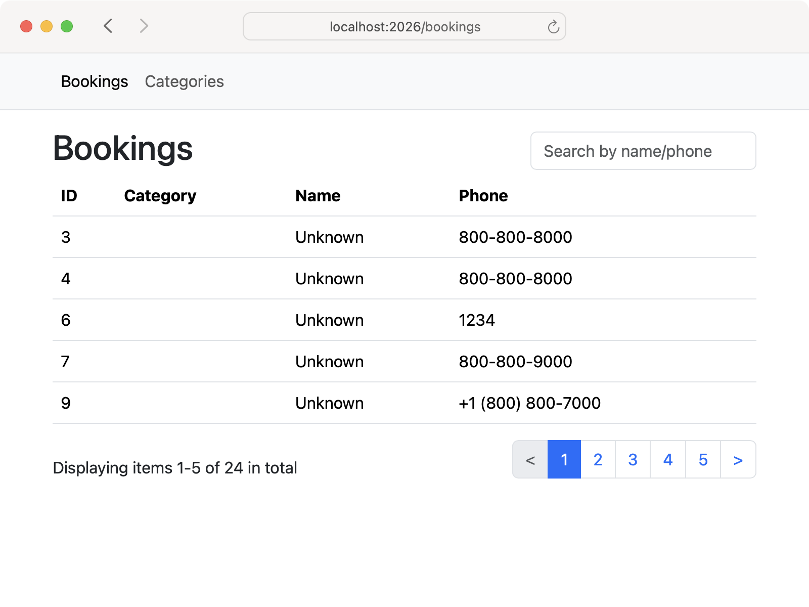
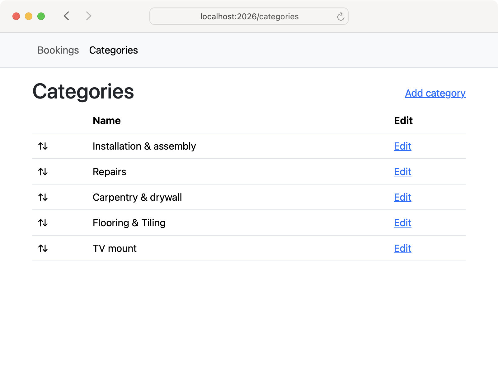

<p>We want all admin views to have the same layout.</p>

<ol style="padding-left: 0; list-style-position: inside">
  <li style="margin-top: 0.75rem"><a href="#"><span class="badge rounded-pill bg-primary">▶︎</span></a> Create a new layout only for administered views.</li>
  <li style="margin-top: 0.75rem"><a href="#"><span class="badge rounded-pill bg-secondary-subtle">▶︎</span></a> Add links to Bookings and Categories.</li>
  <li style="margin-top: 0.75rem"><a href="#"><span class="badge rounded-pill bg-secondary-subtle">▶︎</span></a> Extract duplicated code with helpers.</li>
  <li style="margin-top: 0.75rem"><a href="#"><span class="badge rounded-pill bg-secondary-subtle">▶︎</span></a> Remove more duplication with layouts.</li>
</ol>

<br>

<div class='row row-cols-1 row-cols-md-2 g-4 mb-3 text-center'>
  <div class='col'><div class='card text-bg-success'>
    
  </div></div>
  <div class='col'><div class='card text-bg-success'>
    
  </div></div>
</div>
  